My favorite spot to grab a hot breakfast sandwich is Bagel Gourmet.
They are a small bagel spot local to Providence, Rhode Island, and whenever I need a pick me up, they are my go-to spot.
However, their website looks like this:
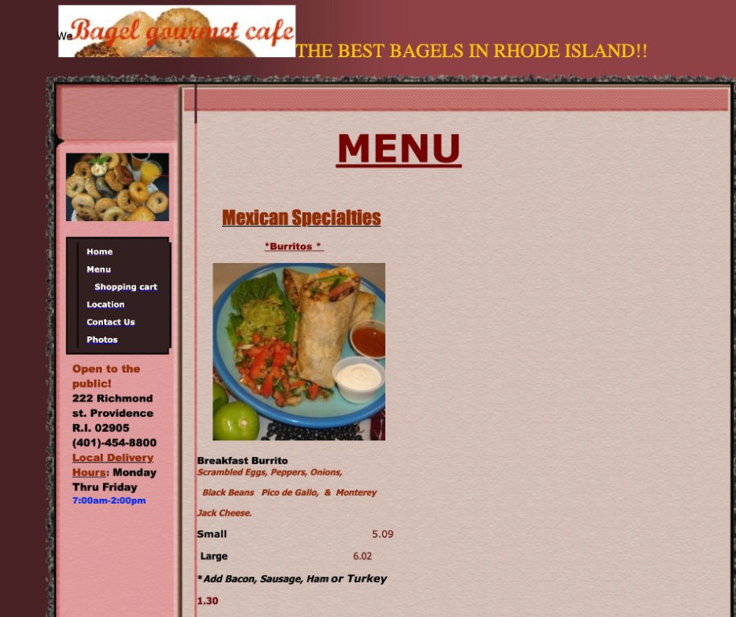
Which looks a little outdated. There are a lot of confusing images overlapping eachother and various fonts randomly used. So, I decided to try and fix it. But, first I needed to know what to redesign.
What are the main pain points?
1. This is a menu for a bagel website that starts with Mexican options.
2. There is no way to build a cart and order.
3. There is no consistent coloring or sizing.
4. The layout is asymmetrical and heavily weighted.
5. There are no clear and distinct navigational tools.
6. No consistent HTML tag hierarchy.
With these points clearly listed, I moved onto brainstorming new alternatives.
Designing the Site
I began by trying to generate 9 different new menu ideas in 9 minutes. Most of these can probably be glossed over. However, a few were particularly interesting.
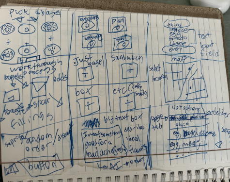
I liked the idea of a simple grid-based ordering system (#2)
I think this is a fairly clean design with little downside. It is intuitive and frequently used. This did make the website not very unique, but that would probably be okay for a bagel place.
Additionally, I also really liked the idea of a text-based bagel sandwich menu (#3).
Here, I see the bagel is visually filled by your toppings, so the more you type the more fillings are placed within your bagel. This only really works for making a bagel sandwich so I thought it could be a cool customization interface.
After a few more sketches, I compiled these ideas into my wireframes!
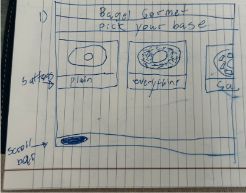
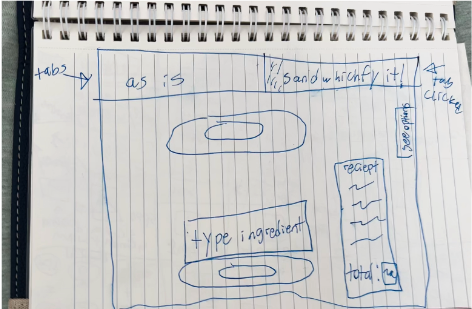
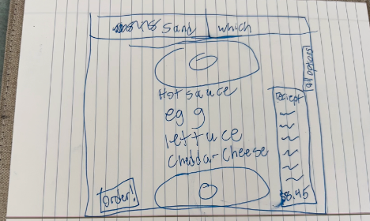
Wireframing
The wireframing was divided into 3 different websites. Each was supposed to be accessible from a different device. The three chosen were mobile, tablet, and desktop .
Each needed to be slightly different, as to best adapt to the device's dimensions while still being cohesive in design.
I also went ahead and defined all the future elements and pages that I would want to build. While those features are outside of the scope of this project, they did help me better understand the user's journey.
Mobile
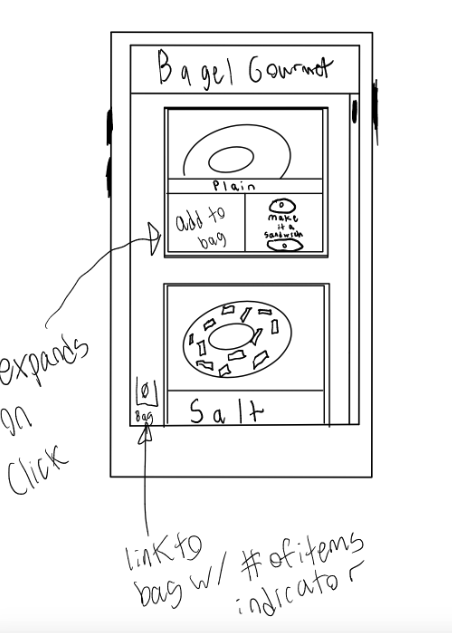
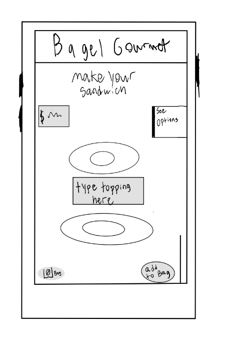
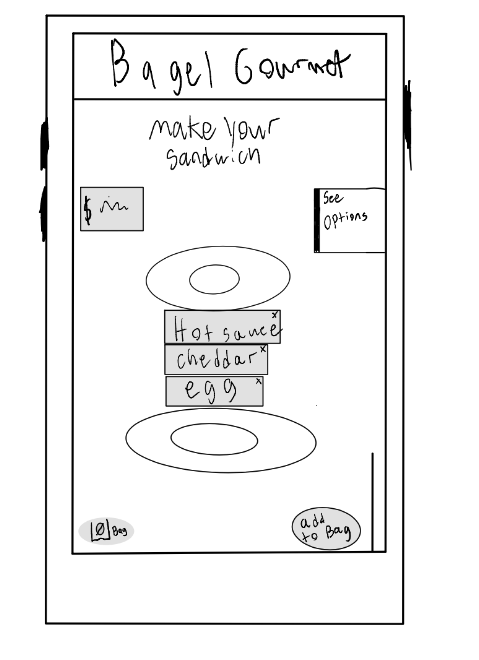
I wanted the mobile display to be fairly minimalist with buttons to redirect to different sites. Thus, the main section of the screen would just be the scrollable menu display.
Tablet
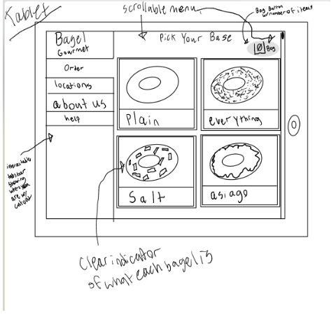
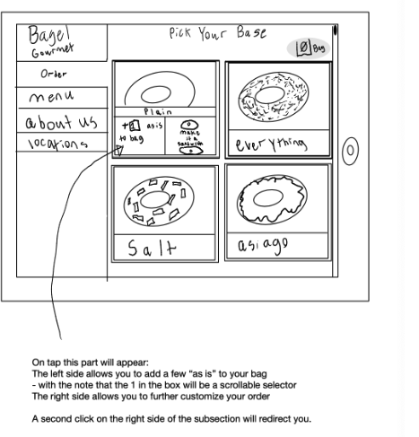
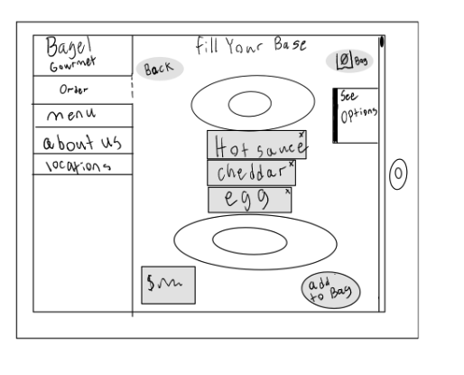
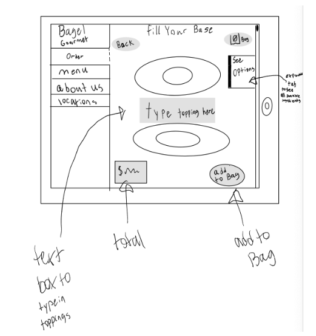
I wanted the tablet display to be more comprehensive. Here, the larger screen resolution can be used to have a permanent navigation bar on the side, while the main section can be used to find items.
Desktop
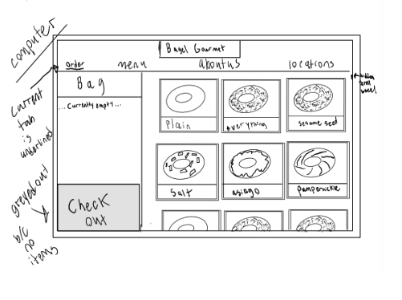
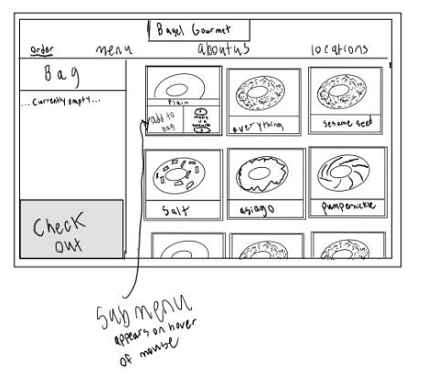
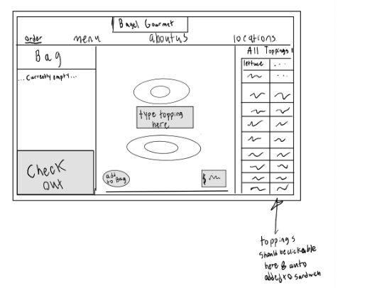
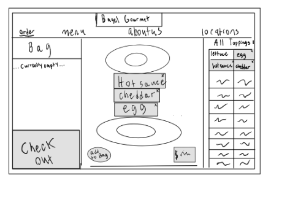
The Desktop display needed to provide the user with the most information. I thought it made sense to bring the bag page out and lock it into the left side of the screen. Doing this meant raising up the navigation bar into being horizontal. I also wanted a lot of bagels to be visible at once.
With the wireframing complete, I then moved on to creating the high fidelity designs for the website in Figma.
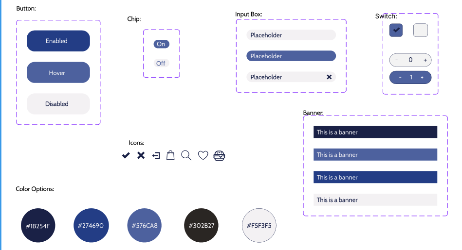
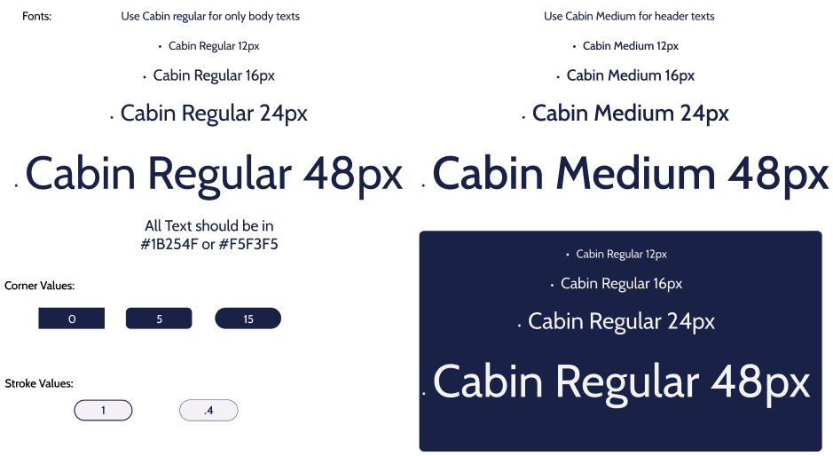
High Fidelity Design
Before I set out to create the high-fidelity mockups, I wanted to create a style guide. This would help me better understand the brand identity that I was building. It would also help me remain consistent throughout my designs. I opted for a blue-toned website which matches Bagel Gourmet's store interior. I also went for a medium, curvy, sans-serif font to emphasize the casual, updated nature of the website.
Mobile
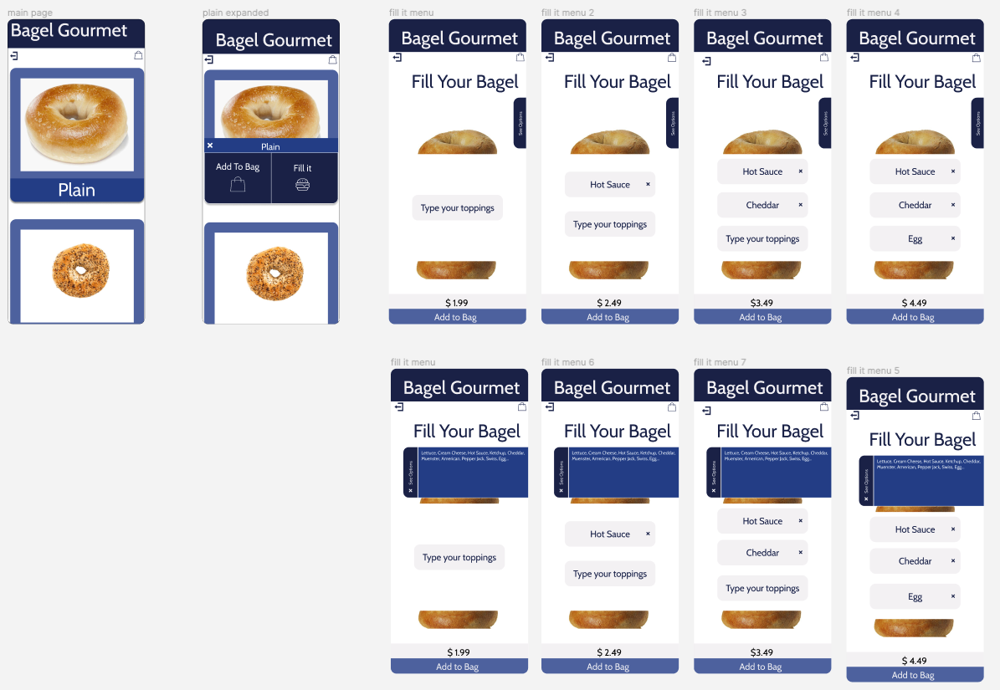
I actually went ahead and made the mobile version fully interactable which can be seen at this link .
Tablet
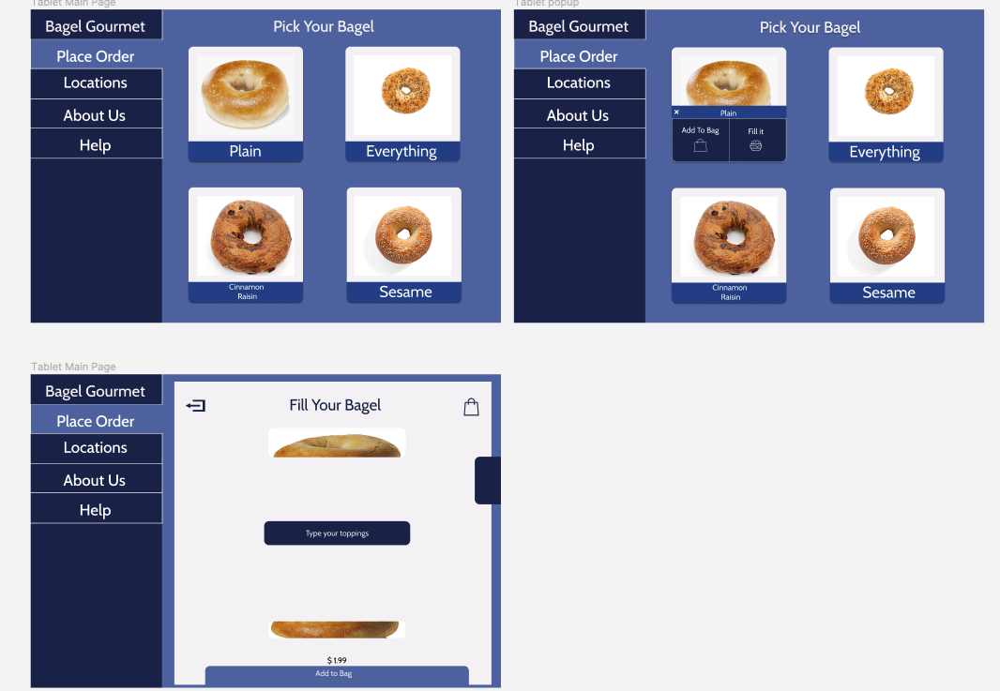
Desktop
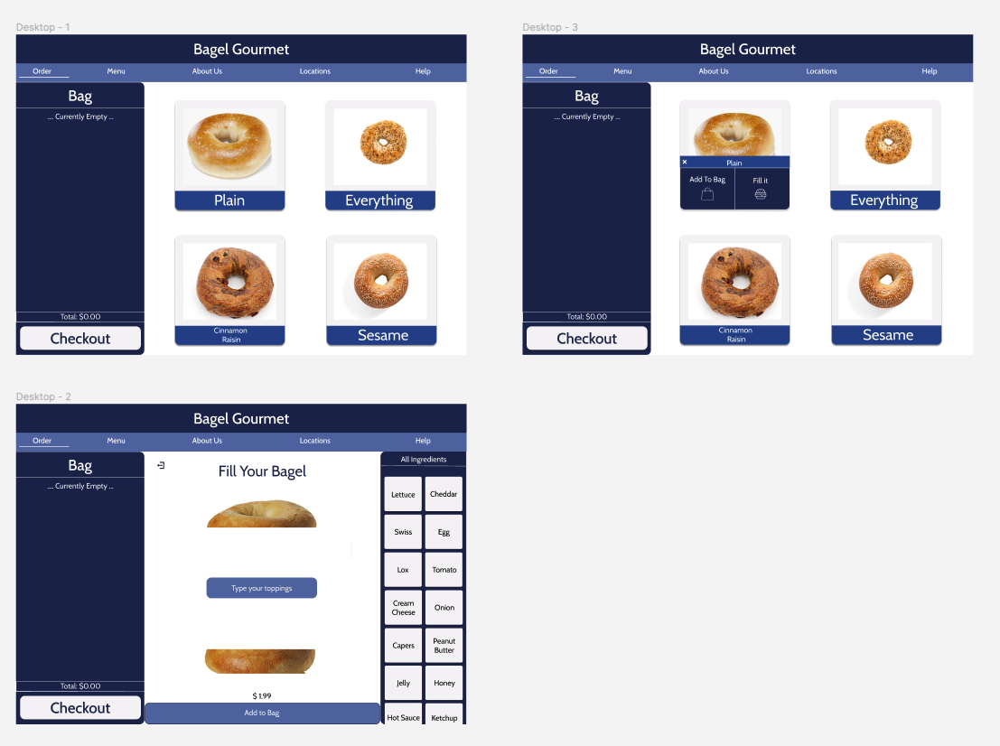
After making these I felt pretty good about how the website was looking, so I decided that I was ready to move onto the HTML and CSS.
However, I do want to highlight that the scope of this project was just to redesign a single page. Given that the original Bagel Gourmet did not have any ordering method, I decided to focus solely on building out the menu page. Maybe later I will make the text box bagel filler because I really do enjoy how it looks!
HTML and CSS
A few things did change as I made the website. First, I changed the tablet background to being the same white tone as the other versions to further cohesion.
I also made the desktop bagel cards much smaller, so two to four could fit onto a monitor.
If I were to keep working on the website, I would want to build out the other pages that I wireframed and drafted as well as the pop-up option for customizing items on a click.
Here is the link to the final website: https://trumooo.github.io/bagels/ !
Comparison between new and original
Accessibility:
The original website scored a 64 in Lighthouse for accessibility. This was largely due to it not using the proper html tags for its architecture. Additionally, there were 19 null text boxes present throughout the page. It also had 12 contrast problems, with 20 general alerts.
My version gets a 100 in Lighthouse for accessibility! The html is heirarchal, and each image has unique and descriptive alt tags.
Design:
There were 6 main pain points highlighted in the original design. This design includes a cart to build orders, has consistant tone and coloring, and clear navigational tools.
It also helps users buy bagels instead of mexican food, which I think is particularly important.
I hope you enjoyed the project and go get a bagel soon!
What did I learn from this project?
1. That the style guide is incredibly helpful and much nicer than going in blind.
2. That building dynamic html on a monitor can warp the pixel dimensions, so freuqently switch displays if possible.
3. I need to do more work into better understanding javascript, so I can later build out more advanced elements.
4. Websites need to be updated frequently, so everything stays fully functional and as accessible as possible.
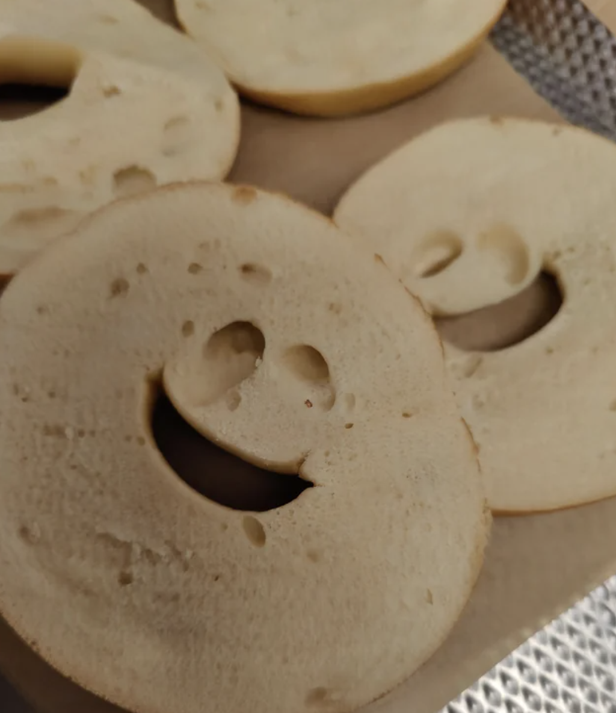